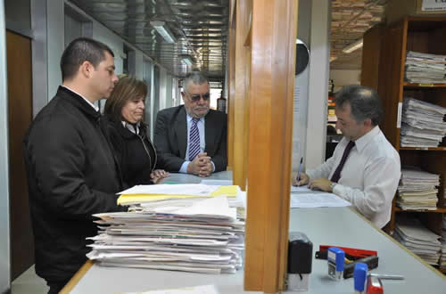

Real Chubut - Agencia de Noticias


PARA EVITAR QUE SE SIGA VENDIENDO TIERRAS A EXTRANJEROS

Se presentó una acción de amparo,
nulidad e inconstitucional del Decreto 820
El diputado del PJ FpV, Blas Meza Evans y el concejal de Lago Puelo, Alejandro Marques presentaron hoy una acción de amparo contra el Gobierno Nacional con el objeto de lograr un pronunciamiento judicial que deje sin efecto el Decreto Nacional N° 820/16 y declare la nulidad absoluta e insanable, por su ilegalidad y arbitrariedad manifiestas ya que modifica las exigencias previstas para la participación de extranjeros en la adquisición de campos. La medida, además, elimina el monitoreo de la UIF y la AFIP en esas operaciones inmobiliarias y facilita la venta de terrenos con espejos de agua.
Asimismo se solicitó se declare todo acto administrativo y jurídico que se haya dictado o realizado desde el dictado del Decreto cuestionado y hasta que la sentencia que recaiga en estos autos quede firme.
La acción de amparo, que también lleva la firma de los diputados Alejandra Marcilla y José Grazzini, se presentó con una voluminosa documentación en defensa de los intereses, no sólo nacionales sino también provinciales, dada las extensas e importantes tierras rurales apetecidas por inversores extranjeros en nuestro territorio. A ello se añade los pactos internacionales de los Derechos Económicos, Sociales y Culturales y las cláusulas de los mismos que establecen el derecho de auto determinación y la titularidad de los pueblos sobre sus recursos y riquezas naturales.
Preservar el agua y alimentos
Blas Mesa Evans explicó que la Ley 26.737, denominada “Régimen de Protección al Dominio Nacional sobre la Propiedad, Posesión o Tenencia de las Tierras Rurales”, sancionada en el año 2011, es alterada inconstitucionalmente por el Decreto Nº 820/2016, bajo la excusa de la pretendida “modificación” cuando esa Ley fue impulsada a fin de resguardar los recursos naturales de los argentinos teniendo en cuenta condiciones geopolíticas de la República Argentina vinculadas a la producción de alimentos en un contexto de crecimiento exponencial de la población mundial.
Indicó que entre los principales fundamentos de la Ley 26.737 son “las profundas consecuencias para el desarrollo futuro de los mercados alimentarios, en especial de los países emergentes, así como la preservación de recursos naturales, escasos y no renovables, a nivel internacional, como lo son la tierra y el agua dulce, y que ha dejado de ser una cuestión de tratamiento sólo individual de determinados países y ha pasado a ser, también, una cuestión de tratamiento por parte de la ONU”.
Sostuvo que “se considera a la tierra un recurso estratégico natural escaso y no renovable, de significación estratégica para el desarrollo humano y social, por lo que era imperioso dictar una legislación tuitiva, para impedir la consolidación de procesos que, de ser librados a su propia dinámica, podrían comprometer gravemente el desarrollo, la soberanía nacional y la titularidad del pueblo argentino sobre sus recursos estratégicos no renovables”.
No a la inversión
Explicó que la protección del dominio nacional sobre las tierras rurales tiene como fin dejar establecido que la adquisición u otras formas jurídicas de posesión de tierras rurales, no configura inversión, ya que se trata de un recurso natural no renovable, crecientemente escaso, en función de variables difíciles o imposibles de revertir (crecimiento de la población mundial –siete mil millones de habitantes-, erosión eólica, salinización, cambio climático, etc.).
Insistió que el principio basal de la Ley 26.737 es el que quiebra, en todas sus disposiciones, el Decreto 820/2016, que parte de la premisa que toda forma de adquisición de dominio, posesión o tenencia de tierras rurales configura una inversión.
Recordó que la Ley 26.737 entre sus principales disposiciones establece que los extranjeros que pretendan adquirir la propiedad o posesión de tierras rurales en la República Argentina deben tramitar previamente un certificado de habilitación ante el Registro de Tierras. Las limitaciones que establece la Ley de Tierras son:
• 15% del territorio, a nivel nacional, provincial y subprovincial (partidos o departamentos según la organización política de la provincia).
• El 30% de una misma nacionalidad, aplicado al 15% del territorio, es decir en términos de superficie la limitación por nacionalidad opera en un 4,5%.
• Las tierras rurales que limiten o contengan cuerpos de agua de envergadura y permanentes no podrán ser adquiridas por extranjeros.
• El tope personal es de 1000 hectáreas en zona núcleo, o su equivalente según propuesta de las provincias aprobadas por el Consejo Interministerial de Tierras Rurales.
Mesa Evans explicó que la ley establece un tope personal, las equivalencias se crearon a fin de poder equiparar tierras de diferente categoría, valor cultural, social, biológico, turístico y no solo el criterio de superficie. Es decir, si en Pergamino Provincia de Buenos Aires donde el límite es de 1000 hectáreas una persona o empresa extranjera tiene 500 hectáreas podrá adquirir hasta 10.000 hectáreas en la meseta patagónica, es decir el 50% del tope para la zona en la que el límite es de 20.000 hectáreas.
La Ley de Tierras establecía la obligación de realizar un relevamiento catastral y dominial a través el Registro Nacional de Tierras Rurales, en el que trabajaron arduamente las 23 provincias argentinas a través de sus catastros y registros de la propiedad inmueble, y organismos de control en materia de personas jurídicas. En 2013 el Registro informó que el 5,93% de tierras rurales del país se encontraban en manos de extranjeros, es decir casi 16 millones de hectáreas.
Resultados del relevamiento
El Registro Nacional de Tierras Rurales informó el estado de implementación de la Ley, en el informe surge que las tierras rurales extranjerizadas al 2015 llegan al 6,09% a nivel nacional es decir 16.253.279 hectáreas; esta modificación de valores respecto a los del año 2013, se debió además del otorgamiento de certificados de habilitación, a declaraciones juradas extemporáneas y fiscalizaciones. La administración actual del Presidente Macri recibió un organismo con personas altamente calificadas, con certificación ISO 9001 a la gestión de calidad, firma digital, certificado digital, informatizado a los fines de equiparar situaciones disímiles entre los profesionales del interior con los de la Ciudad Autónoma de Buenos Aires y con altos estándares de seguridad y transparencia.
Por otra parte, se detectaron en manos de empresas radicadas en Paraísos Fiscales 1.113.654,85 Hectáreas; o sea, más de un millón de hectáreas (Antigua y Barbuda, Islas Caimán, Islas Vírgenes Británicas, Luxemburgo entre otros). Es decir, solo en manos de Paraísos Fiscales 55 veces la superficie porteña.
El decreto y sus contenidos
Sobre los principales contenidos del Decreto 820/2016 dijo que “abre la puerta a que se puedan realizar transferencias de acciones y se extranjerice con solo “comunicar al Registro”; incluso dice expresamente, “no deberá solicitar certificado de habilitación… si la persona controlante supera los límites del Art.10 de la Ley 26.737 (cuerpos de agua y 1000 hectáreas o su equivalente en otra zona del país) tiene 90 días para readecuarse a la ley, transmitiendo a través suyo o de sociedades controladas la propiedad de la tierra o modificando el tipo de explotación”.
Manifestó que el Decreto demuestra un acabado desconocimiento del Derecho Público provincial y de las realidades provinciales, las facultades de ordenamiento territorial (cambios de uso de suelo, zonificaciones, fiscalización ambiental) que son eminentemente provinciales y en algunos casos transferidas a los municipios.
Sostuvo que en consonancia con declaraciones del Instituto Sampay, “la iniciativa macrista no trata solamente de modificar el criterio tuitivo de la Ley 26.737, sino que intenta perpetrar ese despojo al pueblo de la Nación Argentina mediante un simple decreto presidencial”.
Vienen por todo
Blas Mesa Evans en su escrito de amparo no duda que vienen por todo; por las tierras con aptitud rural, por los reservorios de aguas potables, por los alimentos, por los yacimientos de hidrocarburos y de minerales estratégicos para el desarrollo informático (sílice, litio, tungsteno)”.
PUBLICIDAD